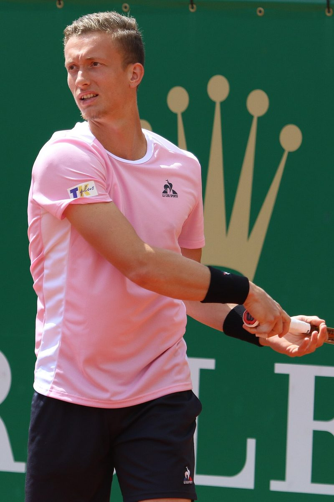

Теннис

Италия обыграла Южную Корею 2:1 и вышла в полуфинал Кубка Дэвиса
Маттео Берреттини и Андреа Вавассори выиграли решающую пару после победы 139-й ракетки мира Квон Сун Ву над Флавио Коболли.

Янник Синнер пропустит Australian Open-2027 из-за операции на правом колене
Федерация тенниса Австралии подтвердила, что двукратный чемпион Мельбурна не сыграет на январском «мейджоре» ради восстановления.

Артур Риндеркнеш опроверг обвинения ITIA в отказе от прохождения допинг-теста
57-я ракетка мира из Франции категорически не согласен с обвинениями и ожидает независимого трибунала без наложения временного отстранения.

Легечка и Махач сокрушили Канаду и вывели Чехию в полуфинал Кубка Дэвиса
Под руководством капитана Томаша Бердыха чехи оформили победу со счетом 2:0 в Болонье и впервые за 12 лет пробились в четверку сильнейших.

Мирра Андреева заработала $10,65 млн за 2026 год и вошла в топ-5 теннисистов планеты по призовым
19-летняя чемпионка «Ролан Гаррос» уступила по доходам на корте только первой ракетке мира Елене Рыбакиной из Казахстана, сообщает Sportico.

Карлос Алькарас обыграл Александра Зверева в Турине и впервые завоевал титул Итогового турнира ATP
23-летний испанец вошел в элитный клуб Агасси, Федерера и Джоковича, став четвертым теннисистом в истории с победами на всех четырех «Шлемах» и ATP Finals.

Пегула отыграла матчбол у Носковой и вышла в полуфинал Итогового турнира WTA
Американская ветеранка вырвала победу в драматичном матче, оставила за бортом плей-офф Коко Гауфф и теперь встретится с Миррой Андреевой.

Андреева выиграла 11 геймов подряд, обыграла Соболенко и вышла в полуфинал Итогового турнира WTA
19-летняя теннисистка победила 6:4, 6:0 в Индиан-Уэллсе и заняла первое место в группе 2 на своём дебютном Итоговом турнире — впервые с 2016 года, когда это удалось Светлане Кузнецовой, россиянка вышла из группы.

Линда Носкова обыграла Кори Гауфф и первой вышла в полуфинал Итогового турнира WTA
Чемпионка Уимблдона победила 6:3, 6:3 в Индиан-Уэллсе и одержала вторую победу в двух матчах на своём дебютном Итоговом турнире.

Скандал с открытым микрофоном: WTA отключила звук на тренировочных кортах после слов Пегулы
Глава тура Валери Камилло принесла извинения пятой ракетке мира за утечку в трансляцию нелестных высказываний о Мирре Андреевой